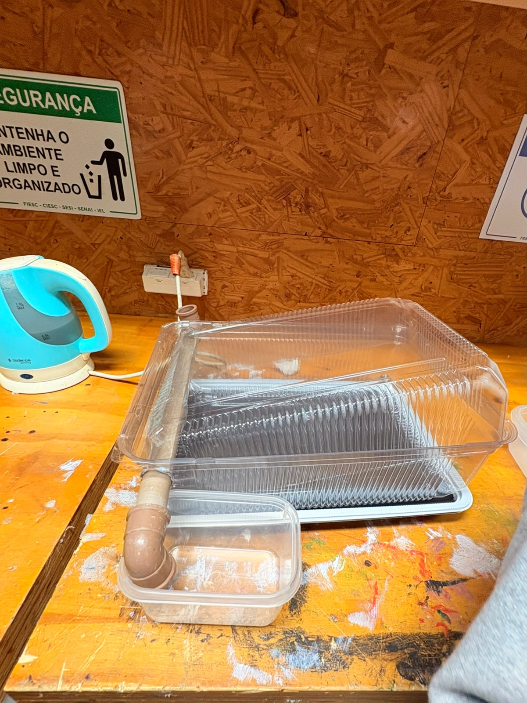
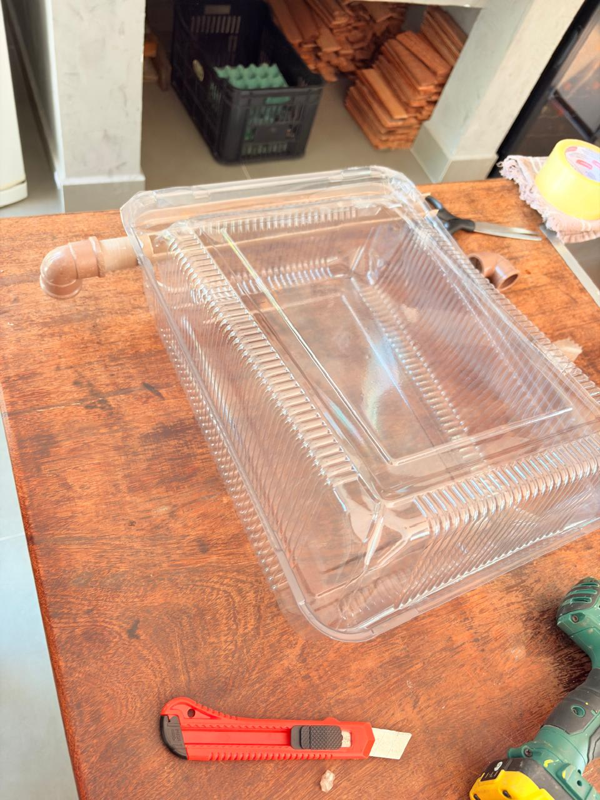
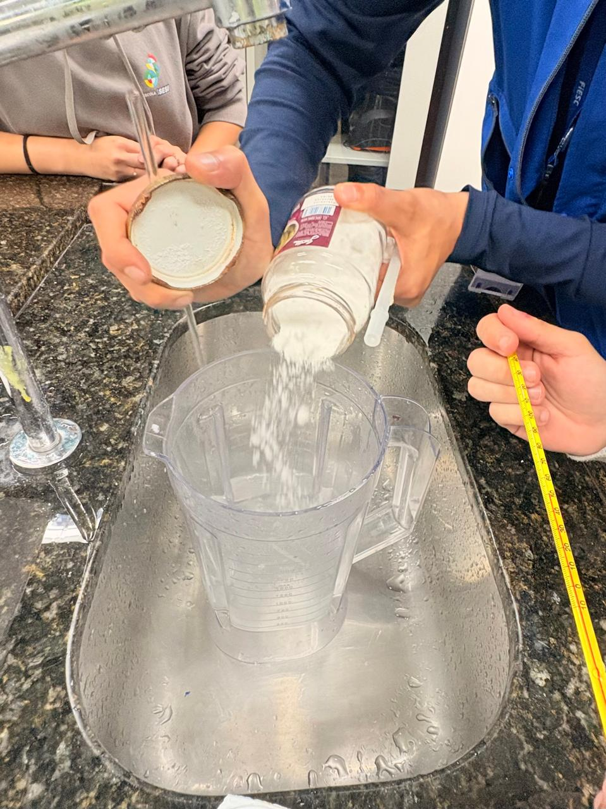

Nosso protótipo
Conheça o destilador que construímos, veja a montagem real e entenda como cada parte foi planejada.
Como pensamos em construir
O protótipo foi montado com duas tampas transparentes de bolo , sobrepostas, formando um recipiente com cobertura inclinada.
Na parte mais baixa, o grupo instalou um cano de PVC com curva , direcionado para um pote plástico coletor . Essa saída foi pensada para conduzir a água condensada.
O planejamento também prevê papelão pintado de preto fosco abaixo da tampa inferior, para ajudar na absorção da radiação solar. Esse detalhe não pode ser confirmado visualmente na fotografia.
 Ilustração esquemática baseada no protótipo montado pelo grupo.
Ilustração esquemática baseada no protótipo montado pelo grupo.
Nosso destilador pronto
Esta é a montagem realizada pelo grupo, com as duas tampas transparentes, o tubo de PVC e o recipiente de coleta.

Nosso trabalho em imagens
Espaço para registrar a construção, os testes e os resultados do destilador solar.


Medidas aproximadas
O campo de capacidade no documento original aparece como “50 mL/L”, sem uma unidade de capacidade definida de forma clara. Por isso, ele deve ser confirmado antes de entrar na ficha técnica.
O que cada pessoa vai trazer
| Material | Quantidade | Responsável |
|---|---|---|
| Tampa de bolo | 2 | Sofia |
| Cano | 1 | Henrique |
| Tinta preta | A definir | Eduarda Pietra |
| Pedaço de papelão | 1 | Eduardo Ramos |